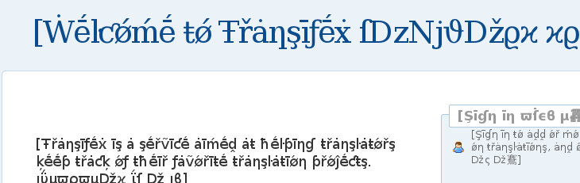

For the most up-to-date information, please refer to Transifex.com and support.transifex.com.
Transifex Community Edition v1.2 (Mystique)¶
Welcome to Transifex CE v1.2, codenamed Mystique!
- Released:
- December 2011
Transifex-1.0 was a huge breakthrough for us since it revolutionized L10n workflow in many ways, like handling translations on a per-string level, adding the .ts file format and introducing of our powerful API. Transifex-1.1 introduced a ton of fixes and improvements that refined the whole experience. Transifex-1.2, codenamed Mystique, brings a lot of fresh and cool, entirely new features to the party.
Here’s the gist:
- New file formats: .desktop, dtd, mozilla .properties, .strings, .wiki, xliff.
- Pseudo-file format.
- Review/proofread translations.
- Webhooks: HTTP callbacks for automatic notification of events.
- User authentication through 3rd-party services (twitter, facebook, google accounts, linkedin).
- Better tag-assignment for projects.
- Resource categories.
- Django-1.3 compatibility.
- Rewrite of the core source file parser.
- Speed improvements, especially on Lotte.
- New user account and profile pages
714 changesets recorded
1046 files changed, 126392 insertions(+), 85936 deletions(-)
Mystique – Promotional cover art. Art by Mike Mayhew.
What’s new in Transifex CE 1.2¶
New file formats: .desktop, dtd, mozilla .properties, .strings, .wiki, xliff.¶
It is always better to have support for a wide range of i18n file formats. This release has implemented native support for the following file formats.
- .desktop: .desktop file contains “desktop entries”, or configuration files describing how a particular program is launched, how it appears in menu, etc. It is widely used by KDE and Gnome
- .dtd: A DTD file contains a list of entities that need to be localized. The entities here defined are then used inside the user interface XUL files.
- mozilla .properties: In these files a number of JavaScript properties (consider them as variables) are assigned with a string value. This format is a lot like the .properties files from Java but it supports unicode.
- Apple .strings: Apple .strings files are used for the localization of Mac OS X and iPhone applications.
- .wiki: A .wiki file is expected to contain text formatted in the wikiML format, eg articles from Wikipedia.
- .xliff: XLIFF (XML Localisation Interchange File Format) is an XML-based format created to standardize localization.
Pseudo translation files¶
This is a very important tool in the i18n process. It helps software developers check their application in terms of proper i18n support. Transifex can now produce language files with fake translated strings that appear distorted, are of greater length than the source strings but are still readable. Developers can use this “pseudo” language file when compiling their product and view the outcome. This is needed to make sure that the product supports multiple languages, that all strings that should be translated are marked as localizable and that the product supports different size and encoding where the original strings are placed.
Pseudo tranlsation files are of course being used during the i18n testing of Transifex itself; here’s a sneek peek:

Review/proofread translations¶
Transifex 1.2 introduces a way for project maintainers to control the quality of their translations. Every language team can have a number of reviewers (team members with reviewing privileges, set by the team coordinator or the project maintainer) responsible for proofreading the translated strings and marking them as reviewed. Reviewers can add, edit and suggest translations normally. The process takes place through Lotte, by using the checkboxes visible next to each string’s entry. The reviewing interface is only visible to reviewers and project maintainers while translators can only see which strings have been reviewed so far.
Webhooks: HTTP callbacks for automatic notification of events¶
Transifex allows you to specify a web hook for the translations of your project. This way, you can get notified whenever the translation of a resource is modified. This opens many possibilities for the maintainers of the project, like pulling translations as soon as they are completed. To use this feature, you have to add a URL for the project. This URL should expect a POST request with the following variables, JSON-formatted:
- project : The slug of the project this notification is for.
- resource: The slug of the resource this notification is for.
- language: The language code of the translation that was modified.
- percent : An integer that represents the rate of translation for the particular resource in the particular language.
User authentication through 3rd-party services (twitter, facebook, google accounts, linkedin).¶
Transifex 1.2 adds support for social registration that gives users the ability to create a Transifex account in just one step, by using the account provider of their choice. Currently, the supported providers are Twitter, Google Account, Facebook and LinkedIn. The relevant user profile fields are populated automatically.
Existing Transifex accounts can be associated with social accounts as well. Using your linked social account you can sign in to Transifex without filling a form; just by following the appropriate links in the login page. Account associations are available from the profile settings.
The feature is available on both Transifex.com and hosted versions of Transifex Community Edition.
Resource categories¶
For projects that house a big number of categories, Transifex now supports an extra level of hierarchy. You can now organize project resources into categories via the project-edit form. You will be further able to view your resources categorized in all pages that show them. The ‘categories’ field is also accesible via our API.
Django-1.3 compatibility¶
Transifex has moved on top of Django 1.3 in this version. Django 1.3 has brought a number of improvements around how static files are served and organized in Transifex, among with the possibility of using the django_compressor app to compress JavaScript and CSS, making the loading of pages faster.
New user account and profile pages¶
Besides the authentication through 3rd-party services, which is referred as social auth, Transifex also has moved on top of a modern and more maintained and secure upstream application for handling the users accounts and profiles. This application is called django-userena and is responsible for important parts of the system such as the user signing up, password rescue and such things.
As a consequence to it, the location feature using Google maps was removed along with client-side cropping of the avatar using JavaScript. These features might come back in the future if decided that they should so.
Full list of important fixes¶
- Use owner as maintainer, if no maintainers are specified.
- Remove FIRST AUTHOR line from po files and sort copyrights.
- Keep ‘FIRST AUTHOR’ for pot file.
- Improved Django admin panel for resources app
- Avoid doubly-inserted double-quotes in joomla .ini files.
- Effort to improved speed of Release details page
- Effort to improve speed on Lotte
- Handle unicode filenames when downloading resources.
- Add custom mime types for java .properties and joomla .ini files.
- Add API calls to access the RLStats object for a resource.
- Improve lotte performance when filtering strings.
- Added support for <comment> tag in .ts files (Qt)
- Add .desktop format support.
- Make views in Lotte show 50 entries by default.
- Added dates validation on release form
- Added simple widget for date fields on release form
- Implemented google-spellcheck in lotte
- Added support for Apple’s .strings file format in Tx
- Fine tuned auto-save feature in Lotte
- Implemented support for XLIFF i18n file format (initial contribution by Miroslav Suchý [https://bitbucket.org/msuchy/])
- Allow language codes with dots
- Added Klingon language
- Added view for downloading pesudo files within the UI
- Add .tx/config.
- Visual improvements on fancybox
- Replace django-profile app by django-userena
- Experimental support for social login.
- Added custom edit profile form/url
- Add short instructions on how to setup social login with various services.
- Initial Django 1.3 support
- NEW FILE FORMAT: adding support for mozilla-style .dtd file (added test for commented entity in .dtd); author: tymofiy
- Update jQuery to version 1.6.2.
- Added RSS feed for user activities in user’s public profile page.
- added location field in profile edit form and made the field autocomplete with google’s geoAPI
- Implemented tag autocomplete in project form.
- Added django_compressor support
- initial commit on resource-categories
- javascript to visually highlight categories in release-language page
- added ‘category’ field to fields handled by the APIv2
- Initial support for wikitext.
- Implemented API(v2) for actionlogs.
- Only show untranslated strings in Lotte by default.
- Invoke save_and_exit on window unload in Lotte.
- Add the web hook addon.
- Add the txapps addon.
- Add ‘reviewed’ field in Translation.
- Integration of the basic reviewing functionality with Lotte.
- Enable the review checkbox in Lotte when creating new strings and uncheck it when modifying existing strings.
- Add GET for releases to the new API, too.
- added validator that checks for blacklisted slugs in project model
- Add new project delete form with password validation.
- Add a new templatetag to split forms in fieldsets in the template.
- added REQUIRE_EMAIL_VALIDATION in settings
- Add shortcuts link and reposition some elements.
- Add LinkedIn authentication backend.
- Add reviewed and reviewed_perc fields to the RLStats model.
- Added API call to return details of supported i18n formats.
- Populate the twitter profile field with the user’s screen name when logging in with Twitter.
- Added ‘My projects’ page.
- Follow ‘next’ URL in the social login links.
- When all strings in Lotte are translated, turn ON default ‘translated’ filter by default.
- Fill the linked_in field of the user profile with the user’s public profile URL when logging in with the LinkedIn backend.
- Use i18n_type to choose a parser instead of the filename or the mimetype.
- String filtering with reviewed strings in lotte.
- Allow users with non-usable password to set a new one.
- Fixes for java .proeprties format in case of escaped chars.
- Fixes for pofile handler
- fix for ‘save and exit’ button in lotte
- Lotte absolute positioning fixes for: a)lotte-actions for Chrome/Opera and b)trigger tabs in Opera
Getting Transifex CE 1.2¶
You can experience Transifex live at http://www.transifex.com/. This upstream instance is hosted by Transifex, the company behind the development of Transifex.
Project and community managers who want to deploy Transifex for their own community may refer to the Installation documentation.
Upgrading to this version¶
To upgrade the code, update your package distribution as usual:
- If you installed from your package distribution, check if there’s been a package upgrade and go for it.
- If you used easy_install, run easy_install -U to upgrade.
- Fresh tarballs are available, if you installed from a release zipfile.
- Finally, if you’re of the daredevil kind and feed straight from the source, git pull should do the trick for you.
Dependencies¶
The following extra dependencies were added since the last major version:
- Django >= 1.3.1
- django-userena
- django-addons >= 0.6.6
- django-social-auth
- django-tagging-autocomplete
- django_compressor
Instructions on how to install the dependencies can be found at the Installation docs. You’ll need to complete this step before actually doing the database migration.
Migration¶
Transifex 1.2 has undergone some changes in its database schema. However it’s very easy to migrate to the new database using the python commands included in the main directory. To do this, you need to run:
python manage.py syncdb --noinput
python manage.py migrate copyright 0001 --fake
python manage.py migrate --ignore-ghost-migrations --noinput
Then, you only need to create new notice types, new languages and new static media by executing the following commands:
python manage.py txcreatenoticetypes
python manage.py txlanguages
python manage.py collectstatic
Note
Depending on the size of the database and the number or projects and resources that you have, this process may take up to several minutes.
Sample Migration¶
A sample run for a migration from Transifex CE 1.1 to Transifex CE 1.2 follows (all stdout/sterr output are omitted):
git clone git@github.com:transifex/transifex.git
git checkout 1.2
python manage.py syncdb --noinput
python manage.py migrate copyright 0001 --fake
python manage.py migrate --ignore-ghost-migrations --noinput
python manage.py txcreatenoticetypes
python manage.py txlanguages
python manage.py collectstatic
Contributors¶
The following people have contributed to this release, with one way or another:
- Antonios Garnelis
- Apostolos Bessas
- Diego Búrigo Zacarão
- Dimitris Glezos
- John Kalantzis
- Konstantinos Bairaktaris
- Ratnadeep Debnath
- Sebastian Hahn
- Tim Babych
Transifex CE 1.2.1¶
Transifex 1.2.1 is a maintenance release, which fixes a few issues for the series of the Mystique codenamed release (1.2.x).
- Released:
- January 08, 2012
116 changesets recorded
178 files changed, 36797 insertions(+), 24301 deletions(-)
Full list of important fixes and enhancements¶
- Add support for redis.
- Marked new strings for translation.
- Dropped pseudo char that was causing troubles to smart_unicode function.
- Added tag field in userena profile form.
- Import comments from Joomla INI files.
- Add Unicode .properties support.
- Free memory more aggressively in format handlers.
- Refactored mozilla properties handler.
- Take into account the filename, when choosing a parser for a file.
- Added support to translate strings in JavaScripts.
- Fix a bug in API v2 while reading an ISO-8859-1 encoded translation.
- Bugfix in GET translation APIv2
- Allow changing the project language from the form when there are no resources.
- Apply filtering by ‘user’ correctly in lotte.
- In Lotte, search for filter keywords in translations as well.
- Handle multiple accounts with the same email correctly in copyright addon.
- Fixed creation of usernames from unicode chars when using social auth.
- Bugfix in team details page for team coordinators and maintainers.
- Bugfix for not able to download original POT file.
- Show reviewers in team_detail.
- Add . character in username regex.
- Bugfix in Joomla INI handler.
- Forbid updating the i18n_type of a resource.
- Added support for xliff files with .xml extension.
- Correctly handle errors from PO files in Storage API.
- Improved project searching results by boosting some fields.
- Added new languages: Swahili (Kenya) (sw_KE) and Kazakh (Kazakhstan) (kk_KZ).
- Show ajax upload errors correctly.
- Display errors with line numbers in case of msgfmt check failure.
- Add validator for project slug.
- Check the project created through the API for validation errors.
- Forbid changing the slug of a project through the API.
- Fixed distutils installation and tarball generation.
- Updated dependency versions.
Transifex CE 1.2 Development Releases¶
- Alpha: 21 Nov 2011
- Beta: 5 Dec 2011
- Final: 15 Dec 2011
Note
Why the name ‘Mystique’?
Mystique (Raven Darkhölme) is a fictional character associated with the Marvel Comics’ franchise X-Men. Originally created by artist David Cockrum and writer Chris Claremont, she first appeared in Ms. Marvel #16.
Throughout most of her history, Mystique has been a supervillain, founding her own Brotherhood of Mutants and assassinating several important people involved in mutant affairs. Mystique herself is a mutant, a shapeshifter whose natural appearance includes blue skin and yellow eyes. At one point, she mentions that she is over 100 years old. Mystique is the mother of the villain Graydon Creed, the X-Men hero Nightcrawler, and adoptive mother of the hero Rogue. She is forced to abandon Nightcrawler, but raises Rogue for a number of years, and the two women have mixed feelings towards one another.
Despite Mystique’s history of crime, she works with the X-Men’s Professor X in a short-lived series. She is later voted straight into the X-Men.
All the above match perfectly with the characteristics of Transifex CE 1.2 ifself. The best is yet to come.
Next Section: Transifex version 1.1 (Sabretooth) »